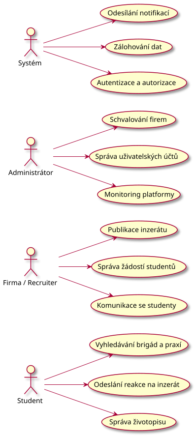
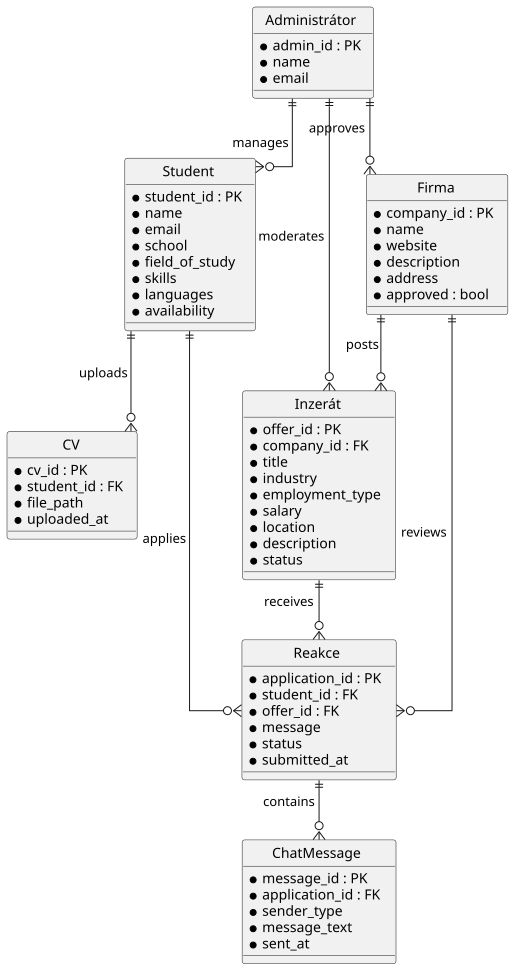
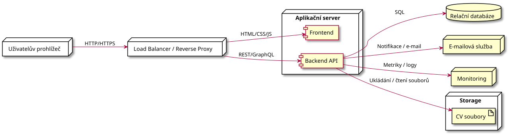
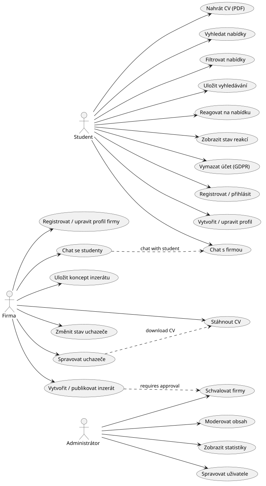
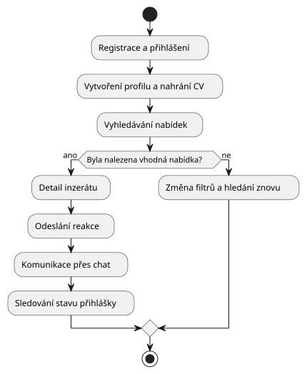
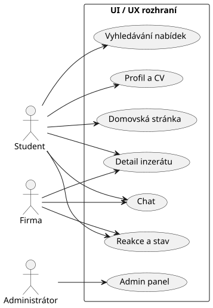
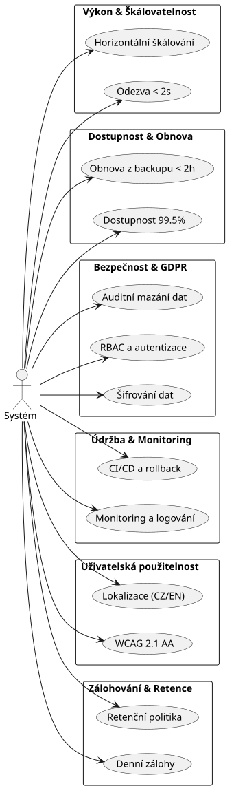

Software pro hledání studentské brigády a praxe ve firmách
Tato stránka funguje jako komplexní přehledový index k nejdůležitějším diagramům a dokumentaci projektu. Zde najdete stručné, ale dostatečně podrobné vysvětlení, co jednotlivé modely zobrazují, jak souvisí s požadavky systému a jak pomáhají lépe pochopit architekturu, role uživatelů, datové vztahy i technologické řešení celé aplikace.
1. Student
Hlavní funkce:
- Vytvoření profilu (nahrání CV, obor, dovednosti).
- Vyhledávání a filtrace brigád/praxí (podle lokality, odměny, oboru).
- Rychlá reakce na inzerát (odeslání profilu jedním kliknutím) a interní chat s firmou.
**Přínos: Hledá přivýdělek a praxi při studiu, vyžaduje rychlé a jednoduché ovládání.
2. Firma / Recruiter
Hlavní funkce:
- Správa firemního profilu a vkládání inzerátů (popis pozice, odměna, požadavky).
- Správa žádostí studentů (přehled reagujících uchazečů, změna stavu na přijat/zamítnut, komentáře).
- Komunikace se studenty přes interní chat a možnost stažení životopisů.
- Přínos: Získává flexibilní výpomoc do projektů, najímá talenty a buduje vztah se studenty.
3. Administrátor
Hlavní funkce:
- Schvalování a ověřování nových firem (prevence podvodných inzerátů).
- Správa uživatelských účtů (blokování uživatelů, mazání nevhodného obsahu).
- Sledování základních statistik platformy (počet aktivních uživatelů a úspěšných propojení).
- Přínos: Zajišťuje bezpečnost, důvěryhodnost a technický chod celé platformy.
4. Systém
Hlavní funkce:
- Odesílání notifikací studentům a firmám při důležitých událostech.
- Zálohování dat a zajištění obnovy informací.
- Autentizace a autorizace uživatelů napříč rolemi.
- Přínos: Udržuje platformu v provozu, zajišťuje bezpečnost a konzistenci dat.
Use Case Diagram

ER diagram ukazuje hlavní entity systému, jejich atributy a vazby mezi studenty, firmami, inzeráty, reakcemi, CV a chatem. Tento model popisuje, jak jsou jednotlivé objekty v aplikaci propojeny, jaké informace se uchovávají o uživatelích a nabídkách a jak se data přenášejí mezi různými funkcemi, jako jsou registrace, přihlášení, reakce na inzeráty, ukládání životopisů nebo interní komunikace. Slouží jako základ pro návrh databáze a pomáhá lépe pochopit logiku ukládání a správy dat v systému.
Ukázat ER diagram

Popis technologického stacku a architektury nasazení aplikace poskytuje přehled o tom, jak jsou jednotlivé části systému realizovány v reálném prostředí. Diagram ukazuje rozmístění komponent v produkčním prostředí, vazby mezi frontendem, backendem, databází, autentizační vrstvou a hostingovým prostředím, a zároveň ilustruje, jak funguje provoz, zálohování, dostupnost a spolehlivost aplikace v praxi. Tento model je užitečný zejména pro pochopení technické infrastruktury a způsobu nasazení aplikace do provozu.
Technologie
- Frontend: HTML, CSS, JavaScript (statická webová stránka, případně framework typu React/Vue pro budoucí rozšíření)
- Backend: Node.js / Python / Java (záleží na výběru, API by mělo být REST nebo GraphQL)
- Databáze: relační databáze (PostgreSQL / MySQL) pro ukládání studentů, firem, inzerátů, reakcí a chatů
- Ukládání souborů: objektové úložiště nebo diskový filesystem pro CV soubory (S3 kompatibilní úložiště nebo cloud storage)
- Autentizace: JWT / OAuth2 pro bezpečné přihlášení a role-based access control
- Notifikace: e-mailová služba (SMTP, SendGrid, Mailgun) a případně push notifikace
Uživatelské rozhraní
- Responzivní design pro desktop i mobil
- Přístupnost a WCAG 2.1 AA jako součást nefunkčních požadavků
Nasazení
- Reverzní proxy / load balancer: Nginx, HAProxy nebo cloudová služba
- Aplikační servery: kontejnery (Docker) pro backend i frontend
- Databáze: nasazení v clusteru nebo spravované DB službě
- Zálohování: denní zálohy databáze a záloha uložených souborů
- Monitoring a logování: Prometheus/Grafana, ELK nebo cloudové monitorování
- CI/CD: GitHub Actions / GitLab CI / Jenkins pro automatické testování a nasazení
Nasazovací scénář
- Vývoj na lokálním počítači.
- Push do repozitáře, spuštění CI pipeline.
- Build a testy aplikace.
- Deploy do staging prostředí.
- Po ověření přepnutí do produkce.
Tento článek slouží jako doplněk k diagramům a vysvětluje technologické volby a architekturu nasazení.
Ukázat deployment diagram

Tato část shrnuje hlavní funkční požadavky systému. Slouží jako praktický přehled toho, co aplikace musí umět, aby podporovala registraci, správu nabídek, reakce studentů, komunikaci a administraci.
Obecné zásady
- Autentizace: systém podporuje registraci a přihlášení pro role Student, Firma a Administrátor.
- Validace: vstupy z formulářů musí být validovány (povinná pole, velikost nahrávek, formát e-mailu).
- Bezpečnost: citlivá data (CV, e-mail) jsou uložena šifrovaně podle standardů.
Studenti (F-ST)
- F-ST-01 – Vytvoření a úprava profilu: student může vytvořit a upravit profil s údaji jako jméno, škola, obor, dovednosti, jazyky, dostupnost a bio.
- F-ST-02 – Nahrání životopisu: student může nahrát PDF do 10 MB a systém ukládá originál i náhled.
- F-ST-03 – Vyhledávání nabídek: fulltextové vyhledávání podle nadpisu, popisu a klíčových slov.
- F-ST-04 – Filtrace nabídek: filtrování podle lokality, typu, odměny, oboru, home office, vzdálenosti a zkušeností.
- F-ST-05 – Rychlá reakce: tlačítko Odpovědět odešle profil a CV firmě s možností doplnit zprávu.
- F-ST-06 – Přehled reakcí: student vidí historii reakcí se stavem a možností zrušení.
- F-ST-07 – Uložené vyhledávání a upozornění: student může uložit vyhledávací dotaz a dostávat nové nabídky e-mailem.
Firmy (F-FI)
- F-FI-01 – Registrace a firemní profil: firma vytváří účet, vyplňuje název, IČ, logo, web, popis a adresu a čeká na schválení administrátorem.
- F-FI-02 – Tvorba a správa inzerátů: firma může vytvářet, publikovat, archivovat a upravovat inzeráty.
- F-FI-03 – Správa uchazečů: firma má přehled reakcí, může filtrovat uchazeče a stáhnout jejich CV.
- F-FI-04 – Rychlé akce a změna stavu: firma může měnit stav uchazeče a přidávat komentáře.
Komunikace (F-CH)
- F-CH-01 – Chat: 1:1 chat připojený k reakci na inzerát, dostupný oběma stranám.
- F-CH-02 – Notifikace: systém upozorňuje uživatele na důležité události v UI a případně e-mailem.
Administrace (F-AD)
- F-AD-01 – Schvalování firem: administrátor schvaluje nebo zamítá nové firmy a jejich inzeráty.
- F-AD-02 – Moderace a správa účtů: administrátor může blokovat účty, mazat obsah a sledovat auditní záznamy.
- F-AD-03 – Statistiky a export dat: dashboard ukazuje aktivní účty, inzeráty, reakce a úspěšnost spojení.
Systém / Společné (F-SYS)
- F-SYS-01 – Typ registrace: registrace rozlišuje Student a Firmu podle role.
- F-SYS-02 – GDPR a mazání dat: uživatelé mohou požadovat smazání osobních údajů a systém provede anonymizaci.
- F-SYS-03 – Limity a zálohy: systém omezí velikost nahrávek, provádí zálohy a logování.
Diagram funkčních požadavků

Tato část přidává UML-standardní vizuální přehled uživatelského rozhraní a toku aplikace. Používáme standardní UML activity a use case diagramy, které lépe odpovídají strukturovanému návrhu systému než běžné wireframe ilustrace.
Uživatelská cesta
Diagram ukazuje hlavní kroky studenta od registrace přes vytvoření profilu, hledání inzerátů, odpověď firmě až po komunikaci a sledování stavu.
Ukázat UI/UX uživatelskou cestu

Wireframe flow
Diagram zachycuje hlavní rozhraní a přechody mezi klíčovými stránkami, jako je domovská stránka, vyhledávání, detail inzerátu, profil, chat a administrace.
Ukázat UI/UX wireframe flow

Tato část shrnuje nefunkční požadavky, které definují kvalitu, bezpečnost, výkon a provozní vlastnosti systému. Jsou důležité pro to, aby aplikace byla spolehlivá, rychlá a bezpečná v reálném použití.
Výkon a škálovatelnost
- NF-PERF-01 – Odezva: 90 % dotazů na vyhledávání musí mít dobu odezvy < 2 s při zátěži 1000 současných uživatelů.
- NF-PERF-02 – Škálovatelnost: systém musí být horizontálně škálovatelný pro zpracování nárůstu uživatelů bez významné degradace výkonu.
Dostupnost a spolehlivost
- NF-REC-01 – Obnova po chybě: systém musí mít obnovu z poslední plné zálohy.
Bezpečnost a ochrana osobních údajů
- NF-SEC-01 – Šifrování: všechna citlivá data v klidu i při přenosu musí být šifrována (TLS pro přenos, AES-256 pro uložení).
- NF-SEC-02 – Autentizace a autorizace: role-based access control pro studenty, firmy a administrátory; podpora silných hesel a resetu hesla.
- NF-PRIV-01 – GDPR: dodržení požadavků na ochranu osobních údajů a auditovatelné mazání dat na požádání.
Údržba a provoz
- NF-MNT-01 – Monitoring a logování: služby musí zaznamenávat metriku výkonu, chyby a bezpečnostní události; logy uchovávat 90 dní.
- NF-MNT-02 – Automatizace nasazení: CI/CD pipeline pro automatické buildy, nasazení a rollback.
Uživatelská použitelnost a přístupnost
- NF-UX-01 – Přístupnost: aplikace by měla splňovat základní zásady přístupnosti WCAG 2.1 AA pro klíčové stránky.
- NF-LOC-01 – Lokalizace: podpora českého a anglického jazyka v uživatelském rozhraní.
Data, zálohování a retenční politika
- NF-BKP-01 – Zálohování: denní zálohy databáze s retenční politikou 30 dní.
- NF-Retention-01 – Retenční politika: definice doby uchovávání osobních údajů a anonymizace po uplynutí lhůty.
Testovatelnost a metriky
- NF-TST-01 – Metody testování: automatizované integrační a zátěžové testy pokrývající kritické scénáře.
- NF-METR-01 – Telemetrie: implementace sledování použití funkcí a chyb.
Diagram nefunkčních požadavků
